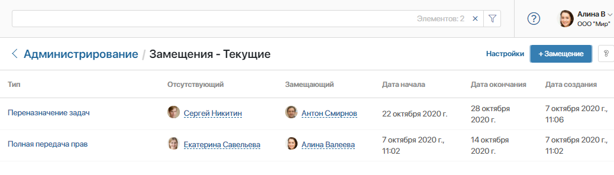
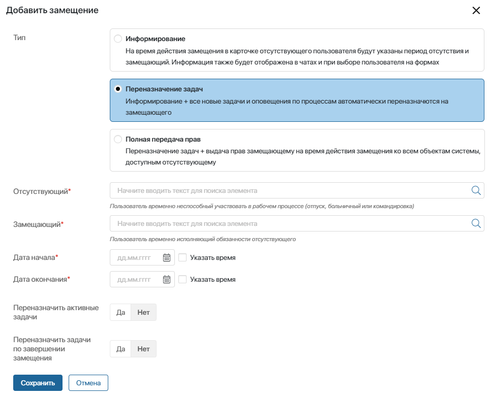
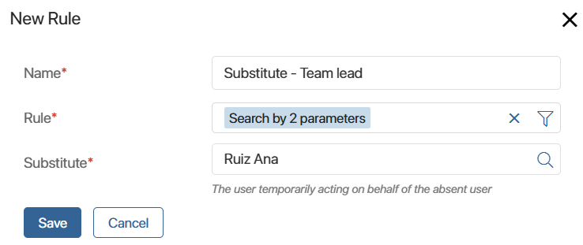
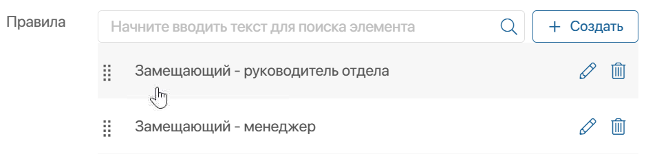
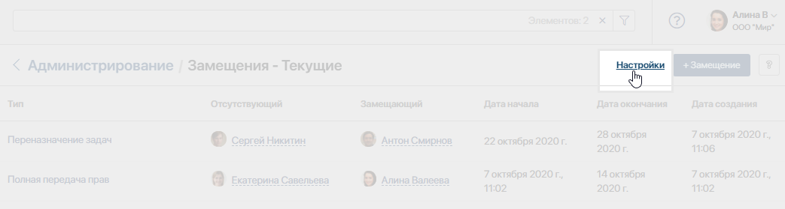
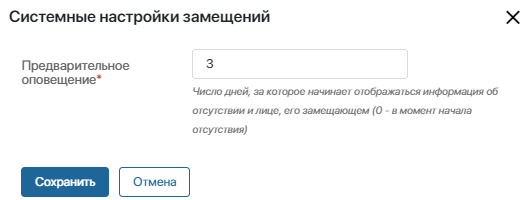
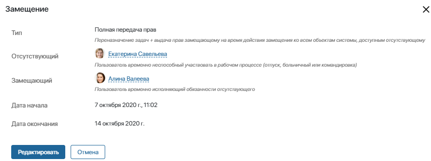
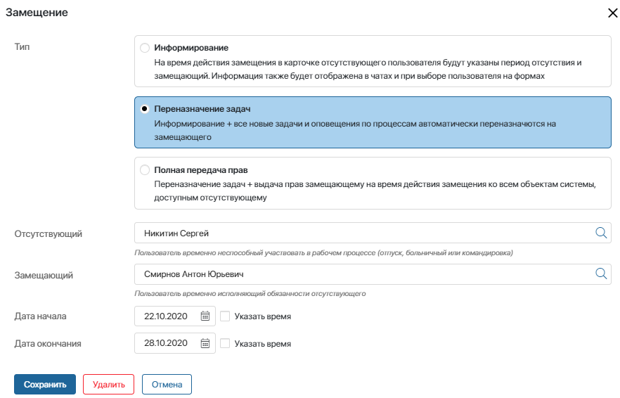

Работа с замещениями ведётся в разделе Администрирование > Компания > Замещения.
Здесь администратор системы может просматривать, настраивать, редактировать и удалять замещения. Также можно настроить переназначение задач отсутствующего и задать правила, по которым они будут распределяться.
Типы замещений
В ELMA365 существует три типа замещения, которые отличаются набором передаваемых прав. При выборе типа замещения мы рекомендуем руководствоваться оргструктурой и внутренними правилами компании:

- Информирование — используется, когда нужно просто показать пользователям, что сотрудник отсутствует. Для этого типа указывать замещающего необязательно. Например, когда решение текущих вопросов может подождать или некому передать дела.
Если замещающий всё-таки указывается, то он сможет решать текущие вопросы, но не будет иметь доступа к задачам, приложениям или документам отсутствующего сотрудника.
- Переназначение задач — при выборе этого типа сохраняется функция информирования. В дополнение замещающему делегируются новые поставленные задачи, срок выполнения которых совпадает с периодом замещения. Чтобы делегировать замещающему задачи, назначенные до даты начала замещения, используйте опцию Переназначить активные задачи.
В рамках процесса сотрудник отправляет документ на согласование руководителю, после чего уезжает в срочную командировку. Руководитель возвращает документ на доработку. Согласно процессу задача доработать документ должна прийти уехавшему сотруднику. Однако, так как было настроено замещение с переназначением задач, задача приходит замещающему его коллеге. Он дорабатывает документ от своего имени и снова отправляет его на согласование, не задерживая рабочий процесс. |
- Полная передача прав — этот тип замещения включает в себя оба предыдущих. В дополнение замещающий временно получает доступ к объектам системы, доступным отсутствующему сотруднику: документам, файлам, разделам и приложениям. Он также сможет увидеть события отсутствующего сотрудника, если ему придёт оповещение или задача со ссылкой на это событие. Исключение составляет раздел Мой отдел, доступ к которому не передаётся.
Обратите внимание, даже при выборе этого типа замещения сотрудник, который заменяет администратора системы, но не входит в группу Администраторы, не получит доступ к разделу Администрирование, настройкам разделов и приложений и т. д.
Подошла дата расчёта с контрагентами, а главный бухгалтер ушёл на больничный. Был назначен замещающий — бухгалтер по зарплате. У бухгалтера по зарплате нет доступа к приложениям Платежи и Контрагенты, необходимым для того, чтобы провести расчёты. Однако, так как при замещении был выбран типа Полная передача прав, временный доступ к этим приложениям у него появился автоматически. Теперь он сможет провести все нужные платежи вовремя, не ожидая, когда главный бухгалтер выйдет с больничного. |
Если включён фича-флаг front_enable_substitution_rules, при создании замещения вы сможете добавить правила для переназначения задач и распределить их между несколькими замещающими. Например, если менеджер уходит в отпуск, его задачи по подписанию актов можно передать руководителю отдела, а заявки от новых клиентов — другому менеджеру.
Создать замещение
- Перейдите в раздел Администрирование > Компания > Замещения и в правом верхнем углу страницы нажмите кнопку +Замещение;
- Заполните форму:

- Тип — выберите тип замещения в зависимости от того, какие права вы хотите назначить замещающему;
- Отсутствующий* — укажите сотрудника, который будет отсутствовать;
- Замещающий* — укажите замещающего пользователя. Для типа Информирование указывать замещающего необязательно;
- Дата начала* и Дата окончания* — установите время начала и окончания замещения. Период замещения не ограничен и может длиться как один час, так и больше года, например, если сотрудник находится в длительной командировке.
Настройте опции переназначения задач. Они доступны, если выбран тип замещения Переназначение задач или Полная передача прав:
- Переназначить активные задачи — включите опцию, чтобы назначить замещающему текущие задачи отсутствующего сотрудника со сроком выполнения в период замещения.
При включённом фича-флаге auth_enable_substitution_full_reassign доступна опция Все задачи, которая позволяет переназначить текущие задачи с любым сроком выполнения. При этом новые задачи тоже назначаться замещающему;
- Переназначить задачи по завершении замещения — выберите Да, чтобы по окончании периода замещения все задачи снова вернулись замещаемому;
- Правила — если нужно распределить задачи между несколькими сотрудниками, создайте правила и укажите в них замещающих и условия переназначения задач.
Опция доступна, если включён фича-флаг front_enable_substitution_rules.
Начало внимание
Чтобы включить фича-флаг auth_enable_substitution_full_reassign или front_enable_substitution_rules для поставки SaaS обратитесь к менеджеру. Для поставки On-Premises подробнее об этом читайте в статьях «Изменение параметров On‑Premises Enterprise» и «Изменение параметров On‑Premises Standard».
Конец внимание
Создать правило переназначения задач
- Рядом с полем Правила нажмите кнопку + Создать.
- В открывшемся окне заполните поля и сохраните данные:

- Название* — укажите название правила;
- Правило* — задайте параметры, по которым будут отбираться задачи для переназначения. Например, укажите ключевое слово в названии задачи;
- Замещающий* — выберите замещающего пользователя, который получит задачи, соответствующие указанным параметрам.
Нераспределённые задачи перейдут к замещающему, который указан на форме замещения.
- Настройте приоритет выполнения правил, если у вас их нескольких. Для этого укажите последовательность в списке, перетаскивая правила c помощью метода Drag-and-Drop.

Обратите внимание, если менять исполнителя в карточке задачи вручную, добавленные правила замещения не применятся.
- Нажмите кнопку Сохранить.
Настроить оповещение об отсутствии
По умолчанию пользователи видят информацию об отсутствии их коллеги только с того момента, когда замещение уже началось. Но вы можете настроить предупреждение заранее, чтобы они успели решить срочные вопросы с нужным сотрудником.
В этом случае нужно указать, за сколько дней информация о предстоящем отсутствии должна появиться в системе.
Для этого откройте страницу со списком замещений и в правом верхнем углу нажмите на Настройки.

В открывшемся окне укажите нужное количество дней.

Обратите внимание, эта настройка применяется ко всем предстоящим замещениям.
Просмотреть замещение
В разделе Администрирование > Замещения настроен иерархический справочник, благодаря которому удобно просматривать и находить нужные замещения:
- Текущие — все действующие на данный момент замещения;
- В плане — все запланированные, но еще не начавшиеся замещения;
- Архив — все завершившиеся и прерванные замещения;
- Все — все созданные замещения.
Вы можете посмотреть всю информацию о замещении, открыв его карточку. Для этого выберите замещение в списке и нажмите на его название.

Отредактировать или удалить замещение
Действующее или ещё не начавшееся замещение можно изменить. Для этого откройте его карточку и нажмите кнопку Редактировать.
Обратите внимание, если замещение ещё не наступило, вы можете изменить пользователей, тип замещения, время начала и окончания, а также правила замещения.

У замещения, которое уже началось, изменить можно только дату или время окончания.
На форме редактирования вам доступны кнопки:
- Удалить — для удаления ещё не начавшегося замещения;
- Прервать — для прерывания текущего замещения.
Удалённое замещение нельзя восстановить. Чтобы уведомить сотрудников и передать права отсутствующего пользователя, создайте замещение повторно.